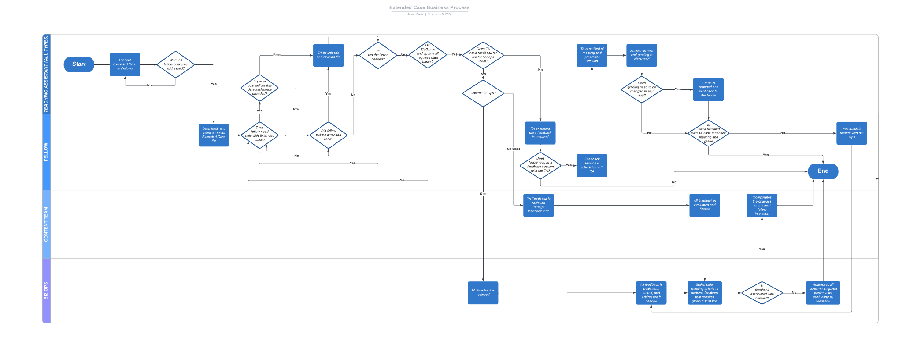

Correlation One / Flagship case study / TA & Curriculum Development
Project Ruby.
Making assessment workflows clearer, grading decisions more consistent, and learner feedback easier to act on.
01 / The challenge
Assess complex work.
Support good judgment.
Extended Cases asked fellows to apply Excel and SQL skills in open-ended assignments. Teaching Assistants needed repeatable grading criteria without losing the ability to recognize honest effort, partial correctness, or alternative valid solutions. Meanwhile, learner feedback and curriculum issues needed an understandable route through the Teaching Assistant, Content Team, and Business Operations.
02 / My contribution
A working rubric.
A repeatable process.
I collaborated with co-developer Frankie Law and Program Manager Ivan Lamas-Sanchez on Extended Case grading and curriculum workflow improvements. The EC1 instructor template and accompanying operational procedure were used in live cohort grading. Across the project, I logged approximately 45–47 hours of curriculum and process development work, including rubric support, case review, and documentation.
I independently recreated the EC1 through EC4 rubrics. Rubric recreation was my individual contribution; live grading support and the wider curriculum workflow were collaborative work with the co-developer and Program Manager. I managed my rubric, review, and documentation workstreams and coordinated findings across instructional and operational stakeholders. My contributions connected practical grading needs with workbook validation controls, documented review steps, clearer assessment materials, and feedback pathways across departments. I also reviewed EC4 SQL course materials in August 2023 and submitted a detailed technical and instructional audit.
Teaching, statistics & curriculum design
During this period, I worked concurrently as a Teaching Assistant, coding instructor, Statistics Co-Lead Instructor, and curriculum developer. Project Ruby’s rubric and assessment work formed part of that broader teaching and curriculum design contribution.
I co-led the program’s first statistics class sessions and delivered nine Jupyter Notebook business cases covering Pandas, exploratory data analysis, linear regression, hypothesis testing, and chi-square contingency testing. We focused on data-driven storytelling and stakeholder engagement through statistical analysis of real business cases.
Watch my Statistics & EDA session ↗
Educator-controlled scoring
Design grading around real submissions, not just rigid answer matching.
Standardized operations
Connect instructional review, fellow questions, feedback sessions, and escalation routes.
Curriculum improvement
Use recurring issues to improve cases and the next cohort iteration.
03 / Excel grading support
Formula diagnostics.
Human judgment.
The EC1 Instructor Template contains diagnostic formula checks in Column BQ, including _xlfn.FORMULATEXT and _xlfn.ISFORMULA. These checks help surface the presence and structure of fellows’ formulas. Separate Boolean rubric controls in Columns BM–BO give TAs control over accuracy and effort scoring. A structured feedback copy-and-paste area on Sheet1 supports consistent communication to fellows.
Grading rules across the Extended Cases
| Assessment | Grading policy | Evaluator consideration |
|---|---|---|
| EC1 | Pass / Fail | Automated and manual components; credit for honest effort. More than half of exercises credited qualifies as passing. |
| EC2 and EC3 | 70% point threshold | Full credit for correct work, partial credit where available, half credit for an honest but incorrect attempt, and zero for unanswered or low-effort work. |
| EC4 | SQL case review | Validate equivalent SQL results and learning objectives without requiring identical query syntax. The alternative-solution evaluation is a proposed improvement. |
04 / EC4 SQL engineering audit
Find the friction.
Improve the learning path.
My August 15, 2023 review of the extended.sql case examined performance, instructional clarity, and the connection between SQL exercises and business questions. The audit documented JupyterHub server failures on larger queries, including a crash scenario that a colleague later attributed to insufficient allocated server memory.
Environment & dependencies
Identified loading and heavy-query issues and questioned whether scipy and pgspecial were required in requirements.txt. Package cleanup was a recommendation, not a recorded deployment.
Business KPI logic
Recommended measuring Order Quantity alongside Total Sales to distinguish a consistent seller from an isolated high-value order.
Visual instruction
Suggested left-to-right JOIN/ERD sequences, closer table references, and Jupyter Render Side by Side to reduce context switching.
SQL learning experience
Flagged unclear SUM instructions, NULL/None examples, inconsistent sub-exercise formats, and opportunities to practice aliases using realistic business labels.
The proposed four-part exercise blueprint
| Step | What fellows would see |
|---|---|
| 1 · Business Context | The business question and why it matters. |
| 2 · Data / KPI Context | Which measures, tables, and relationships answer the question. |
| 3 · Object Checklist | A compact list of requested fields, tables, joins, filters, and records. |
| 4 · Interactive Hints | Optional progressive guidance plus “Was this information helpful?” feedback for continuous content improvement. |
The August 2023 audit informed engineering and instructional discussions, with recommendations organized around environment reliability, business KPIs, and exercise design.
05 / Process architecture
From original operations.
To an integrated design.
The original Extended Case process mapped accountability across four groups. The upgraded architecture adds a proposed Project Ruby automation lane, making systematic validation, exceptions, and parallel review flows easier to visualize.
Original four-swimlane workflow

Upgraded five-swimlane architecture

Original As-Is vs. Upgraded To-Be
| Process issue / logic trap | Original As-Is | Upgraded To-Be |
|---|---|---|
| 1 · Ambiguous validation route | TA manually interprets submission completeness and correctness. | Dedicated validation lane proposes explicit outcomes for valid work, corrections, and exceptions. |
| 2 · Feedback mixed with grading | Feedback discussion and grade changes may loop through the TA workflow. | Separate grade delivery from coaching/appeal follow-up, with defined ownership. |
| 3 · Content and operational issues | Issues branch to Content or Biz Ops after TA review. | Specify intake categories, handoff records, and targeted departmental response. |
| 4 · Resubmission and deadline ambiguity | Timing and resubmission checks appear in multiple decisions. | Single visible resubmission/extension decision path with escalation rules. |
| 5 · Continuous improvement handoff | Feedback is reviewed and incorporated into later fellow iterations. | Proposed tracking of recurring issue patterns, structured QA trends, and documented updates across cohorts. |
These five comparisons connect the historical workflow to the proposed future-state improvements.
06 / Outcomes and evidence
Standardize today.
Design for scale.
Project Ruby established a practical bridge between grading consistency and educator discretion: deployed EC1 grading support, an operational procedure, documented case reviews, and a clearer cross-functional assessment model. The EC4 audit contributed actionable engineering and curriculum recommendations for the next iteration.
Live grading support
EC1 template and SOP used in cohort grading in collaboration with the co-developer and Program Manager.
Cross-functional process clarity
Original workflow clarified the responsibilities of Teaching Assistants, Fellows, Content, and Biz Ops.
Future-state architecture
Five-lane blueprint frames how submission validation, exception paths, coaching, and QA could be coordinated.